Umetnite i uredite grafikone
Umetnite grafikon
Da biste umetnuli grafikon u Presentation Editor-u,
- Postavite kursor na mesto gde želite da dodate grafikon.
- Prebacite se na karticu Insert na gornjoj alatnoj traci.
- Kliknite na ikonicu Chart na gornjoj alatnoj traci.
-
Izaberite potrebnu vrstu grafikona među dostupnim:
Stubičasti grafikoni
- Grupisani stubičasti
- Složeni stubičasti
- 100% složeni stubičasti
- 3D grupisani stubičasti
- 3D složeni stubičasti
- 3D 100% složeni stubičasti
- 3D stubičasti
Linijski grafikoni
- Linijski
- Složeni linijski
- 100% složeni linijski
- Linijski sa markerima
- Složeni linijski sa markerima
- 100% složeni linijski sa markerima
- 3D linijski
Kružni grafikoni
- Kružni
- Prstenasti
- 3D kružni
Trakasti grafikoni
- Grupisani trakasti
- Složeni trakasti
- 100% složeni trakasti
- 3D grupisani trakasti
- 3D složeni trakasti
- 3D 100% složeni trakasti
Površinski grafikoni
- Površinski
- Složeni površinski
- 100% složeni površinski
Berzanski grafikoni
XY (rasipni) grafikoni
- Rasipni
- Složeni trakasti
- Rasipni sa glatkim linijama i markerima
- Rasipni sa glatkim linijama
- Rasipni sa pravim linijama i markerima
- Rasipni sa pravim linijama
Radarski grafikoni
- Radarski
- Radarski sa markerima
- Popunjeni radarski
Kombinovani grafikoni
- Grupisani stubičasti – linijski
- Grupisani stubičasti – linijski na sekundarnoj osi
- Složeni površinski – grupisani stubičasti
- Prilagođena kombinacija
Napomena: ONLYOFFICE Presentation Editor podržava sledeće tipove grafikona koji su kreirani pomoću alata trećih strana: Piramida, Trakasti (piramida), Horizontalni/vertikalni cilindri, Horizontalni/vertikalni konusi. Možete otvoriti fajl koji sadrži takav grafikon i izmeniti ga koristeći dostupne alate za uređivanje grafikona. Sledeći tipovi su podržani samo za otvaranje: Histogram, Vodopadni, Levak.
-
Nakon toga, pojaviće se prozor Chart Editor u kojem možete uneti potrebne podatke u ćelije koristeći sledeće kontrole:
- i za kopiranje i lepljenje kopiranih podataka
- i za poništavanje i ponovno izvršavanje radnji
- za umetanje funkcije
- i za smanjivanje i povećavanje broja decimalnih mesta
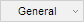
za promenu formata brojeva, tj. načina na koji se uneti brojevi prikazuju u ćelijama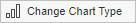
za izbor drugačijeg tipa grafikona.
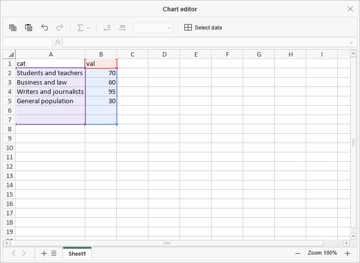
-
Kliknite na dugme Select Data koje se nalazi u prozoru Chart Editor. Otvoriće se prozor Chart data.
-
Koristite dijalog Chart data za upravljanje opcijama Chart data range, Legend entries (series), Horizontal (category) axis labels i Switch row/column.
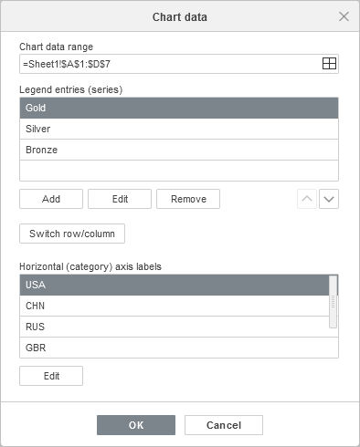
-
Chart data range – izaberite podatke za vaš grafikon.
-
Kliknite na ikonicu desno od polja Chart data range da biste izabrali opseg podataka.
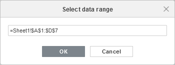
-
Kliknite na ikonicu desno od polja Chart data range da biste izabrali opseg podataka.
-
Legend entries (series) – dodajte, izmenite ili uklonite stavke legende. Unesite ili izaberite naziv serije za stavke legende.
- U okviru Legend entries (series) kliknite na dugme Add.
-
U prozoru Edit series unesite novi naziv stavke legende ili kliknite na ikonicu desno od polja Select name.
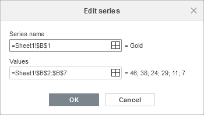
-
Horizontal (category) axis labels – promenite tekst oznaka kategorija.
- U okviru Horizontal (category) axis labels kliknite na Edit.
-
U polju Axis label range unesite oznake koje želite da dodate ili kliknite na ikonicu desno od polja Axis label range da biste izabrali opseg podataka.
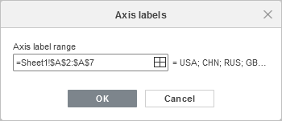
- Switch row/column – preuredite podatke radnog lista koji su konfigurisani u grafikonu ako nisu raspoređeni onako kako želite. Zamenite redove i kolone da biste prikazali podatke na drugoj osi.
-
Chart data range – izaberite podatke za vaš grafikon.
- Kliknite na dugme OK da biste primenili izmene i zatvorili prozor.
-
Koristite dijalog Chart data za upravljanje opcijama Chart data range, Legend entries (series), Horizontal (category) axis labels i Switch row/column.
-
Kliknite na dugme Change Chart Type u prozoru Chart Editor da biste izabrali tip i stil grafikona. Izaberite grafikon iz dostupnih kategorija: Column, Line, Pie, Bar, Area, Stock, XY (Scatter), Radar ili Combo.
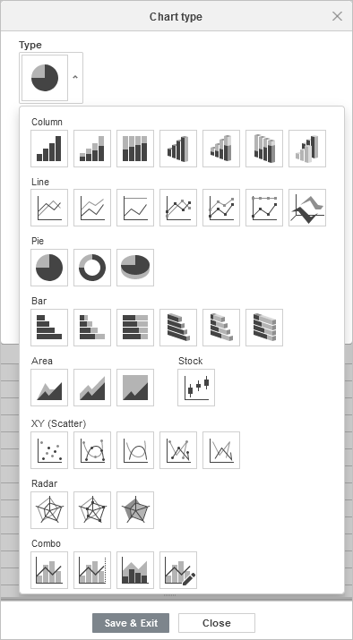
Kada izaberete Combo Charts, prozor Chart type prikazuje serije grafikona i omogućava izbor tipova grafikona za kombinovanje, kao i izbor serija podataka koje će biti prikazane na sekundarnoj osi.
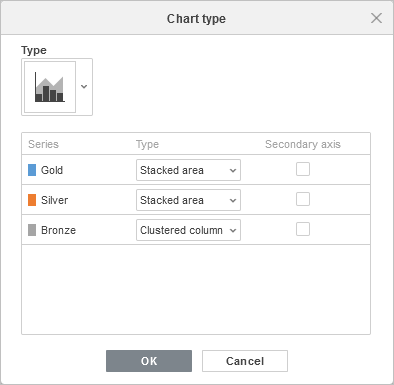
-
Promenite podešavanja grafikona klikom na dugme Edit Chart koje se nalazi u prozoru Chart Editor. Otvoriće se prozor Chart – Advanced Settings.
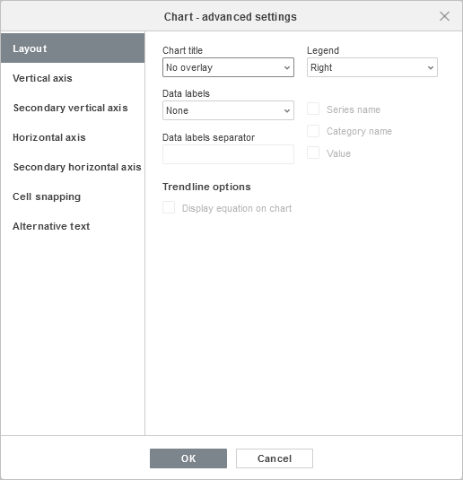
Kartica Layout omogućava promenu rasporeda elemenata grafikona.
-
Odredite položaj Chart title u odnosu na grafikon izborom odgovarajuće opcije iz padajuće liste:
- None – bez naslova grafikona,
- Overlay – naslov se preklapa i centrira unutar oblasti grafikona,
- No overlay – naslov se prikazuje iznad oblasti grafikona.
-
Odredite položaj Legend u odnosu na grafikon izborom odgovarajuće opcije iz padajuće liste:
- None – bez legende,
- Bottom – legenda je prikazana i poravnata na dnu oblasti grafikona,
- Top – legenda je prikazana i poravnata na vrhu oblasti grafikona,
- Right – legenda je prikazana i poravnata desno od oblasti grafikona,
- Left – legenda je prikazana i poravnata levo od oblasti grafikona,
- Left overlay – legenda se preklapa i centrira levo u oblasti grafikona,
- Right overlay – legenda se preklapa i centrira desno u oblasti grafikona.
-
Odredite parametre Data labels (tj. tekstualnih oznaka koje predstavljaju tačne vrednosti tačaka podataka):
-
Odredite položaj Data Labels u odnosu na tačke podataka izborom odgovarajuće opcije iz padajuće liste. Dostupne opcije zavise od izabranog tipa grafikona.
- Za grafikone Column/Bar dostupne su opcije: None, Center, Inner bottom, Inner top, Outer top.
- Za grafikone Line/XY (Scatter)/Stock dostupne su opcije: None, Center, Left, Right, Top, Bottom.
- Za grafikone Pie dostupne su opcije: None, Center, Fit to width, Inner top, Outer top.
- Za grafikone Area, kao i za 3D grafikone Column, Line, Bar, Radar i Combo, dostupne su opcije: None, Center.
- Izaberite podatke koje želite da uključite u oznake čekiranjem odgovarajućih polja: Series name, Category name, Value,
- Unesite znak (zarez, tačka-zarez itd.) koji želite da koristite za razdvajanje više oznaka u polje Data labels separator.
-
Odredite položaj Data Labels u odnosu na tačke podataka izborom odgovarajuće opcije iz padajuće liste. Dostupne opcije zavise od izabranog tipa grafikona.
- Linije – koristi se za izbor stila linija za Line/XY (Scatter) grafikone. Možete izabrati jednu od sledećih opcija: Straight za korišćenje pravih linija između tačaka podataka, Smooth za korišćenje glatkih krivih između tačaka podataka ili None da se linije ne prikazuju.
-
Markeri – koristi se za određivanje da li će se markeri prikazivati (ako je polje označeno) ili ne (ako polje nije označeno) za Line/XY (Scatter) grafikone.
Napomena: opcije Linije i Markeri dostupne su samo za Line grafikone i XY (Scatter) grafikone.
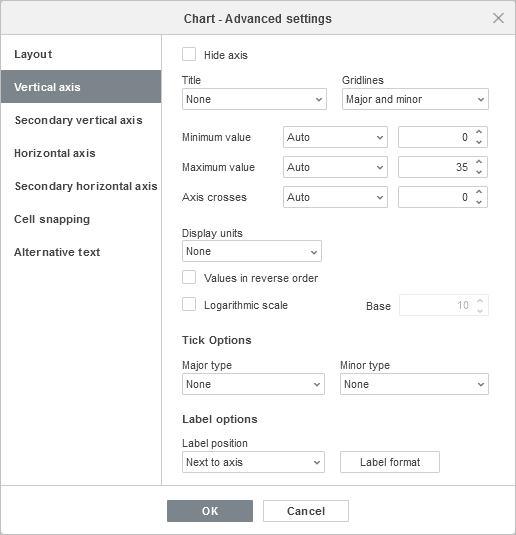
Kartica Vertical axis omogućava promenu parametara vertikalne ose, koja se naziva i osa vrednosti ili y-osa, i prikazuje numeričke vrednosti. Imajte u vidu da će vertikalna osa biti osa kategorija koja prikazuje tekstualne oznake za Bar grafikone; u tom slučaju opcije kartice Vertical axis odgovaraće onima opisanim u sledećem odeljku. Za XY (Scatter) grafikone obe ose su ose vrednosti.
Napomena: odeljci Axis Settings i Gridlines biće onemogućeni za Pie grafikone jer grafikoni ovog tipa nemaju ose ni mrežne linije.
- Izaberite Hide da biste sakrili vertikalnu osu u grafikonu ili ostavite neoznačeno da bi vertikalna osa bila prikazana.
-
Odredite orijentaciju Title izborom odgovarajuće opcije iz padajuće liste:
- None – bez naslova vertikalne ose,
- Rotated – naslov se prikazuje odozdo nagore, levo od vertikalne ose,
- Horizontal – naslov se prikazuje horizontalno, levo od vertikalne ose.
- Gridlines – koristi se za određivanje koje će se vertikalne mrežne linije prikazivati izborom odgovarajuće opcije iz padajuće liste: None, Major, Minor ili Major and minor.
- Minimum value – koristi se za određivanje najniže vrednosti prikazane na početku vertikalne ose. Opcija Auto je podrazumevano izabrana; u tom slučaju minimalna vrednost se automatski izračunava u zavisnosti od izabranog opsega podataka. Možete izabrati opciju Fixed iz padajuće liste i uneti drugu vrednost u polje sa desne strane.
- Maximum value – koristi se za određivanje najviše vrednosti prikazane na kraju vertikalne ose. Opcija Auto je podrazumevano izabrana; u tom slučaju maksimalna vrednost se automatski izračunava u zavisnosti od izabranog opsega podataka. Možete izabrati opciju Fixed iz padajuće liste i uneti drugu vrednost u polje sa desne strane.
- Axis crosses – koristi se za određivanje tačke na vertikalnoj osi u kojoj horizontalna osa treba da je preseče. Opcija Auto je podrazumevano izabrana; u tom slučaju vrednost preseka osa se automatski izračunava u zavisnosti od izabranog opsega podataka. Možete izabrati opciju Value iz padajuće liste i uneti drugu vrednost u polje sa desne strane ili postaviti tačku preseka osa na Minimum/Maximum Value na vertikalnoj osi.
- Display units – koristi se za određivanje načina prikaza numeričkih vrednosti duž vertikalne ose. Ova opcija može biti korisna kada radite sa velikim brojevima i želite da se vrednosti na osi prikazuju na sažetiji i čitljiviji način (npr. možete prikazati 50 000 kao 50 korišćenjem jedinica Thousands). Izaberite željene jedinice iz padajuće liste: Hundreds, Thousands, 10 000, 100 000, Millions, 10 000 000, 100 000 000, Billions, Trillions, ili izaberite opciju None da biste se vratili na podrazumevane jedinice.
- Values in reverse order – koristi se za prikaz vrednosti u suprotnom smeru. Kada je polje neoznačeno, najniža vrednost je na dnu, a najviša na vrhu ose. Kada je polje označeno, vrednosti su poređane od vrha ka dnu.
- Logarithmic scale – koristi se za omogućavanje logaritamske skale sa Base vrednošću koju određuje korisnik.
-
Odeljak Tick Options omogućava podešavanje izgleda oznaka podeoka na vertikalnoj skali. Glavni podeoci su veće podele skale koje mogu imati oznake sa numeričkim vrednostima. Sporedni podeoci su manje podele skale koje se nalaze između glavnih podeoka i nemaju oznake. Podeoci takođe određuju gde se mogu prikazivati mrežne linije ako je odgovarajuća opcija postavljena na kartici Layout. Padajuće liste Major/Minor type sadrže sledeće opcije:
- None – bez glavnih/sporednih podeoka,
- Cross – glavni/sporedni podeoci se prikazuju sa obe strane ose,
- In – glavni/sporedni podeoci se prikazuju unutar ose,
- Out – glavni/sporedni podeoci se prikazuju izvan ose.
-
Odeljak Label options omogućava podešavanje izgleda oznaka glavnih podeoka koje prikazuju vrednosti. Da biste odredili Label position u odnosu na vertikalnu osu, izaberite odgovarajuću opciju iz padajuće liste:
- None – bez oznaka podeoka,
- Low – oznake se prikazuju levo od oblasti grafikona,
- High – oznake se prikazuju desno od oblasti grafikona,
- Next to axis – oznake se prikazuju pored ose.
-
Da biste odredili Label format, kliknite na dugme Label format i izaberite odgovarajuću kategoriju.
Dostupne kategorije formata oznaka:
- General
- Number
- Scientific
- Accounting
- Currency
- Date
- Time
- Percentage
- Fraction
- Text
- Custom
Opcije formata oznaka se razlikuju u zavisnosti od izabrane kategorije. Za više informacija o promeni formata brojeva, posetite ovu stranicu.
- Označite Linked to source da biste zadržali format brojeva iz izvora podataka u grafikonu.
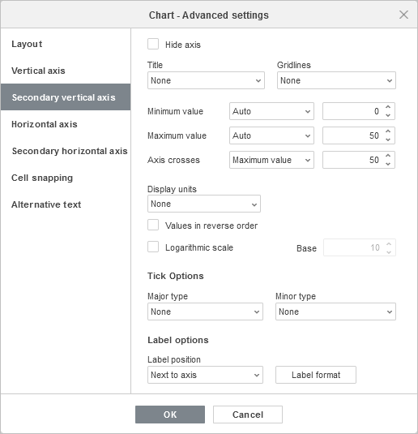
Napomena: sekundarne ose su podržane samo u Combo grafikonima.
Secondary axes su korisne u Combo grafikonima kada se serije podataka znatno razlikuju ili kada se za prikaz grafikona koriste mešoviti tipovi podataka. Sekundarne ose olakšavaju čitanje i razumevanje kombinovanog grafikona.
Kartica Secondary vertical/horizontal axis pojavljuje se kada izaberete odgovarajuću seriju podataka za kombinovani grafikon. Sva podešavanja i opcije na kartici Secondary vertical/horizontal axis ista su kao i podešavanja na kartici Vertical/Horizontal axis. Za detaljan opis opcija Vertical/Horizontal axis pogledajte opis iznad/ispod.
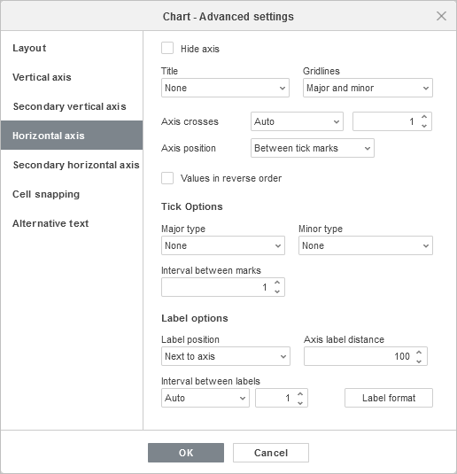
Kartica Horizontal axis omogućava promenu parametara horizontalne ose, koja se naziva i osa kategorija ili x-osa, i prikazuje tekstualne oznake. Imajte u vidu da će horizontalna osa biti osa vrednosti koja prikazuje numeričke vrednosti za Bar grafikone; u tom slučaju opcije kartice Horizontal axis odgovaraće onima opisanim u prethodnom odeljku. Za XY (Scatter) grafikone obe ose su ose vrednosti.
- Izaberite Hide da biste sakrili horizontalnu osu u grafikonu ili ostavite neoznačeno da bi horizontalna osa bila prikazana.
-
Odredite orijentaciju Title izborom odgovarajuće opcije iz padajuće liste:
- None – kada ne želite da se prikazuje naslov horizontalne ose,
- No overlay – da bi se naslov prikazao ispod horizontalne ose,
- Gridlines – koristi se za određivanje koje će se horizontalne mrežne linije prikazivati izborom odgovarajuće opcije iz padajuće liste: None, Major, Minor ili Major and Minor.
- Axis crosses – koristi se za određivanje tačke na horizontalnoj osi u kojoj vertikalna osa treba da je preseče. Opcija Auto je podrazumevano izabrana; u tom slučaju vrednost preseka osa se automatski izračunava u zavisnosti od izabranog opsega podataka. Možete izabrati opciju Value iz padajuće liste i uneti drugu vrednost u polje sa desne strane ili postaviti tačku preseka osa na Minimum/Maximum value (što odgovara prvoj i poslednjoj kategoriji) na horizontalnoj osi.
- Axis position – koristi se za određivanje gde će se tekstualne oznake ose prikazivati: On tick marks ili Between tick marks.
- Values in reverse order – koristi se za prikaz kategorija u suprotnom smeru. Kada je polje neoznačeno, kategorije se prikazuju sleva nadesno. Kada je polje označeno, kategorije su poređane zdesna nalevo.
-
Odeljak Tick Options omogućava podešavanje izgleda oznaka podeoka na horizontalnoj skali. Glavni podeoci su veće podele koje mogu imati oznake sa vrednostima kategorija. Sporedni podeoci su manje podele koje se nalaze između glavnih podeoka i nemaju oznake. Podeoci takođe određuju gde se mogu prikazivati mrežne linije ako je odgovarajuća opcija postavljena na kartici Layout. Možete podesiti sledeće parametre podeoka:
- Major/Minor type – koristi se za određivanje sledećih opcija položaja: None – bez glavnih/sporednih podeoka, Cross – glavni/sporedni podeoci se prikazuju sa obe strane ose, In – glavni/sporedni podeoci se prikazuju unutar ose, Out – glavni/sporedni podeoci se prikazuju izvan ose.
- Interval between marks – koristi se za određivanje koliko kategorija će biti prikazano između dva susedna podeoka.
-
Odeljak Label options omogućava podešavanje izgleda oznaka koje prikazuju kategorije.
- Label position – koristi se za određivanje gde će oznake biti postavljene u odnosu na horizontalnu osu. Izaberite potrebnu opciju iz padajuće liste: None da se oznake kategorija ne prikazuju, Low da se oznake kategorija prikazuju na dnu oblasti grafikona, High da se oznake kategorija prikazuju na vrhu oblasti grafikona, Next to axis da se oznake kategorija prikazuju pored ose.
- Axis label distance – koristi se za određivanje koliko blizu osi treba da budu postavljene oznake. Potrebnu vrednost možete uneti u polje za unos. Što je veća postavljena vrednost, veće je rastojanje između ose i oznaka.
- Interval between labels – koristi se za određivanje učestalosti prikaza oznaka. Opcija Auto je podrazumevano izabrana; u tom slučaju oznake se prikazuju za svaku kategoriju. Možete izabrati opciju Manual iz padajuće liste i uneti potrebnu vrednost u polje za unos sa desne strane. Na primer, unesite 2 da biste prikazali oznake za svaku drugu kategoriju itd.
-
Da biste odredili Label format, kliknite na dugme Label format i izaberite odgovarajuću kategoriju.
Dostupne kategorije formata oznaka:
- General
- Number
- Scientific
- Accounting
- Currency
- Date
- Time
- Percentage
- Fraction
- Text
- Custom
Opcije formata oznaka se razlikuju u zavisnosti od izabrane kategorije. Za više informacija o promeni formata brojeva, posetite ovu stranicu.
- Označite Linked to source da biste zadržali formatiranje brojeva iz izvora podataka u grafikonu.
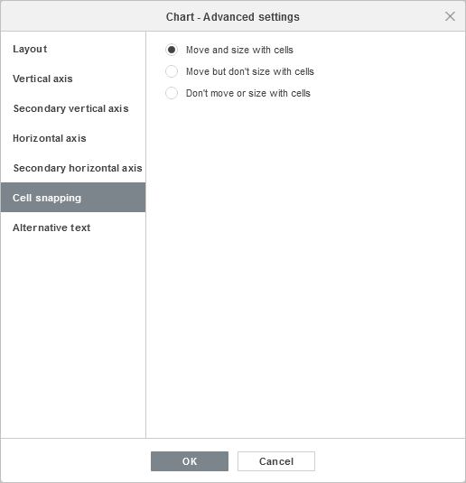
Kartica Cell snapping sadrži sledeće parametre:
- Move and size with cells – ova opcija omogućava vezivanje grafikona za ćeliju koja se nalazi ispod njega. Ako se ćelija pomeri (npr. ako ubacite ili obrišete neke redove/kolone), grafikon će se pomeriti zajedno sa ćelijom. Ako povećate ili smanjite širinu ili visinu ćelije, grafikon će takođe promeniti svoju veličinu.
- Move but don't size with cells – ova opcija omogućava vezivanje grafikona za ćeliju ispod njega, ali sprečava promenu veličine grafikona. Ako se ćelija pomeri, grafikon će se pomeriti zajedno sa ćelijom, ali ako promenite veličinu ćelije, dimenzije grafikona će ostati nepromenjene.
- Don't move or size with cells – ova opcija sprečava pomeranje ili promenu veličine grafikona ako se promeni položaj ili veličina ćelije.
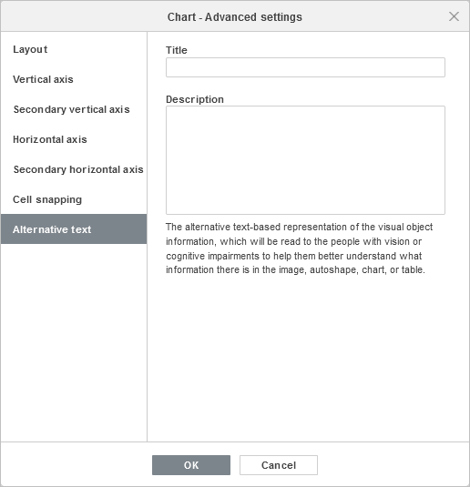
Kartica Alternative text omogućava navođenje Title i Description koji će biti pročitani osobama sa oštećenjima vida ili kognitivnim poteškoćama kako bi im se olakšalo razumevanje sadržaja grafikona.
-
Odredite položaj Chart title u odnosu na grafikon izborom odgovarajuće opcije iz padajuće liste:
-
Nakon što je grafikon dodat, možete takođe promeniti njegovu veličinu i položaj.
Položaj grafikona na slajdu možete odrediti pomeranjem vertikalno ili horizontalno.
Takođe možete dodati grafikon u tekstualni placeholder pritiskom na ikonicu Chart unutar njega i izborom potrebnog tipa grafikona:

Moguće je dodati grafikon i u raspored slajda. Za više informacija pogledajte ovaj članak.
Uredite elemente grafikona
Da biste uredili Title grafikona, izaberite podrazumevani tekst mišem i unesite sopstveni.
Da biste promenili formatiranje fonta unutar tekstualnih elemenata, kao što su naslov grafikona, naslovi osa, stavke legende, oznake podataka itd., izaberite odgovarajući tekstualni element klikom levim tasterom miša. Zatim koristite odgovarajuće ikonice na kartici Home gornje alatne trake da biste promenili tip, stil, veličinu ili boju fonta.
Kada je grafikon izabran, dostupna je i ikonica Shape settings sa desne strane, pošto se oblik koristi kao pozadina grafikona. Kliknite na ovu ikonicu da biste otvorili karticu Shape settings na desnoj bočnoj traci i prilagodili Fill i Line oblika. Imajte u vidu da ne možete promeniti tip oblika.
Korišćenjem kartice Shape settings na desnom panelu možete ne samo prilagoditi samu oblast grafikona već i promeniti elemente grafikona, kao što su plot area, data series, chart title, legend itd., i primeniti različite tipove ispune na njih. Izaberite element grafikona klikom levim tasterom miša i odaberite željeni tip ispune: solid color, gradient, texture, picture ili pattern. Navedite parametre ispune i po potrebi podesite nivo Opacity. Kada izaberete vertikalnu ili horizontalnu osu ili mrežne linije, podešavanja ivice su dostupna samo na kartici Shape settings: color, width, type i opacity. Za više detalja o radu sa bojama, ispunama i linijama oblika, pogledajte ovu stranicu.
Napomena: opcija Show shadow je takođe dostupna na kartici Shape settings, ali je onemogućena za elemente grafikona.
Ako je potrebno da promenite veličinu elemenata grafikona, kliknite levim tasterom miša da biste izabrali željeni element i prevucite jedan od 8 belih kvadrata koji se nalaze duž ivice elementa.
Da biste promenili položaj elementa, kliknite levim tasterom miša na njega, proverite da li se kursor promenio u , držite levi taster miša i prevucite element na željenu poziciju.
Da biste obrisali element grafikona, kliknite levim tasterom miša na njega da biste ga izabrali i pritisnite taster Delete.
Takođe možete rotirati 3D grafikone pomoću miša. Kliknite levim tasterom miša unutar oblasti grafikona i držite taster. Pomerajte kursor bez otpuštanja tastera miša da biste promenili orijentaciju 3D grafikona.
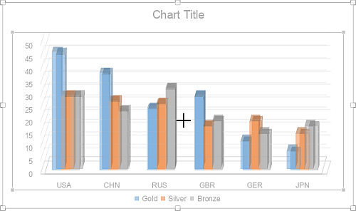
Prilagodite podešavanja grafikona
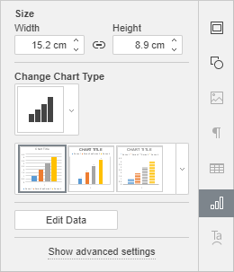
Veličina, tip i stil grafikona, kao i podaci koji se koriste za njegovo kreiranje, mogu se menjati pomoću desne bočne trake. Da biste je aktivirali, kliknite na grafikon i izaberite ikonicu Chart settings sa desne strane.
Odeljak Size omogućava promenu širine i/ili visine grafikona. Ako je dugme Constant proportions aktivirano (u tom slučaju izgleda ovako ), širina i visina će se menjati zajedno uz očuvanje originalnog odnosa stranica grafikona.
Odeljak Change Chart Type omogućava promenu tipa izabranog grafikona i/ili njegovog stila korišćenjem odgovarajućeg padajućeg menija.
Da biste izabrali potreban Style grafikona, koristite drugi padajući meni u odeljku Change Chart Type.
Dugme Edit Data omogućava otvaranje prozora Chart Editor i započinjanje uređivanja podataka kao što je gore opisano.
Napomena: da biste brzo otvorili prozor „Chart Editor“, možete i dvaput kliknuti na grafikon na slajdu.
Pored toga, dostupna su i podešavanja 3D Rotation za 3D grafikone:
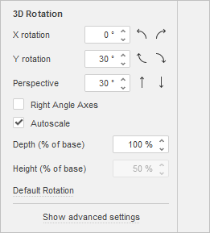
- X rotation – postavite potrebnu vrednost rotacije oko X ose pomoću tastature ili strelica Left i Right sa desne strane.
- Y rotation – postavite potrebnu vrednost rotacije oko Y ose pomoću tastature ili strelica Up i Down sa desne strane.
- Perspective – postavite potrebnu vrednost rotacije dubine pomoću tastature ili strelica Narrow field of view i Widen field of view sa desne strane.
- Right Angle Axis – koristi se za postavljanje prikaza ose pod pravim uglom.
- Autoscale – označite ovo polje da biste automatski prilagodili vrednosti dubine i visine grafikona ili uklonite oznaku da biste ove vrednosti postavili ručno.
- Depth (% of base) – postavite potrebnu vrednost dubine pomoću tastature ili strelica.
- Height (% of base) – postavite potrebnu vrednost visine pomoću tastature ili strelica.
-
Default Rotation – vratite 3D parametre na podrazumevane vrednosti.
Imajte u vidu da nije moguće uređivati svaki pojedinačni element grafikona; podešavanja će biti primenjena na grafikon u celini.
Opcija Show advanced settings na desnoj bočnoj traci omogućava otvaranje prozora Chart - Advanced Settings u kojem možete prilagoditi sledeće parametre:
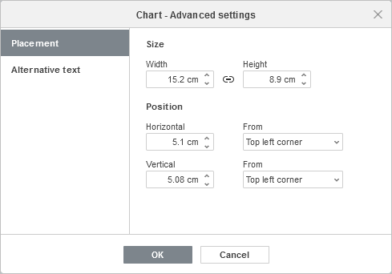
Kartica Placement omogućava podešavanje sledećih svojstava:
- Size – koristite ovu opciju da biste promenili širinu i/ili visinu slike. Ako je dugme Constant proportions aktivirano (u tom slučaju izgleda ovako ), širina i visina će se menjati zajedno uz očuvanje originalnog odnosa stranica slike.
- Position – podesite tačan položaj koristeći polja Horizontal i Vertical, kao i polje From gde možete izabrati podešavanja kao što su Top left corner i Center.
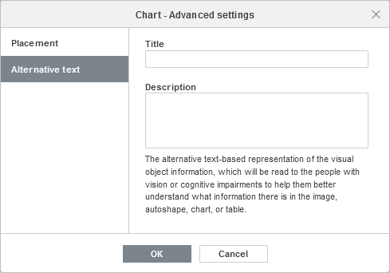
Kartica Alternative text omogućava navođenje Title i Description koji će biti pročitani osobama sa oštećenjima vida ili kognitivnim poteškoćama kako bi im se olakšalo razumevanje sadržaja grafikona.
Da biste obrisali umetnuti grafikon, kliknite levim tasterom miša na njega i pritisnite taster Delete.
Da biste saznali kako da poravnate grafikon na slajdu ili rasporedite više objekata, pogledajte odeljak Poravnajte i rasporedite objekte na slajdu.